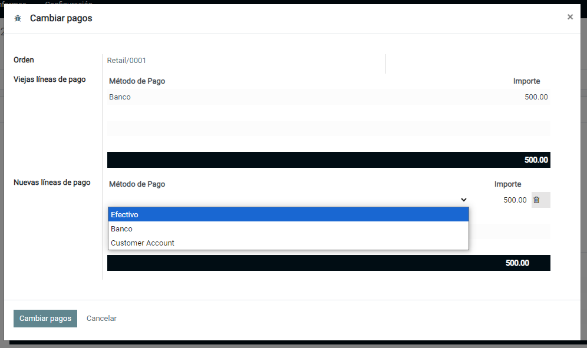
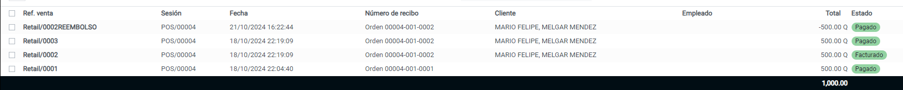

Punto de Venta - Cambiar Pagos
Este módulo amplía la funcionalidad del Punto de Venta Odoo para permitir al cajero cambiar los pagos de un pedido PoS.
Tabla de Contenido
Configuración
Hay dos opciones disponibles:
Nota: En algunos países, la opción "Actualizar pagos" no está permitida por ley, porque el historial de pedidos no debe modificarse.
Para ello, existe una restricción para verificar el valor de este campo. Si está instalado el módulo l10n_fr_certification y si la empresa actual tiene una contabilidad inalterable, no será posible seleccionar el valor 'Actualizar Pagos'.
Uso
En el asistente emergente, seleccione los pagos reales que se han utilizado para pagar el pedido.
Nota: Si se selecciona la opción "Reembolso y reventa", al cambiar los pagos se mostrarán los tres pedidos de POS: el original, el de reembolso y el nuevo.
